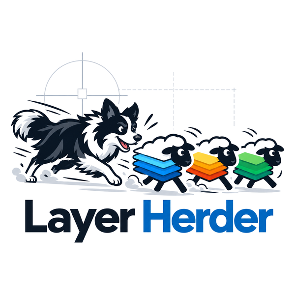
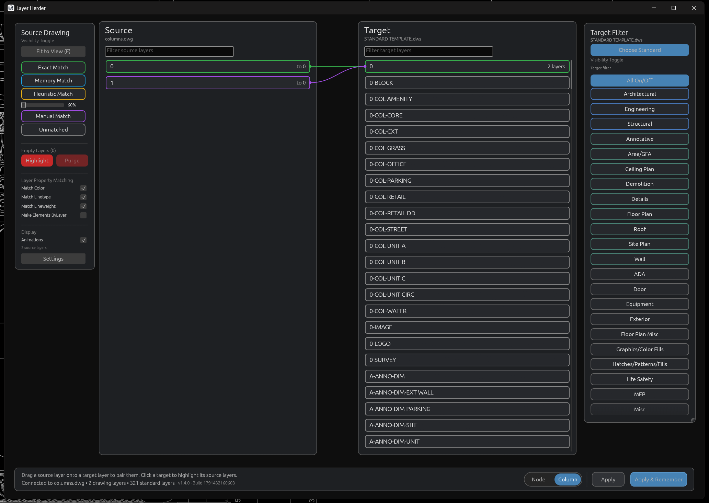
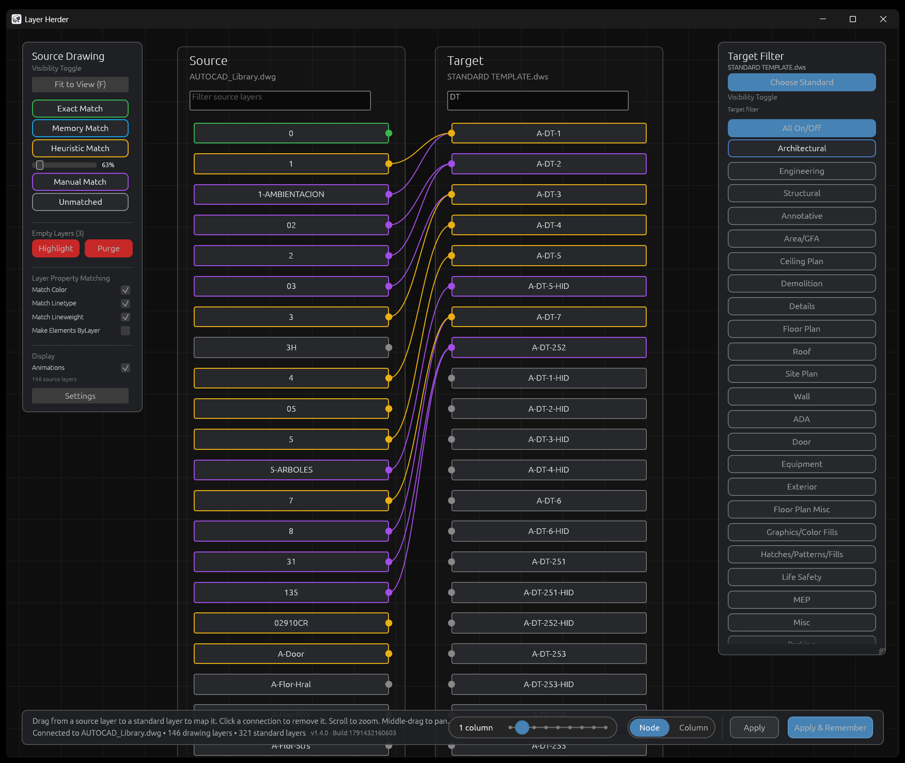
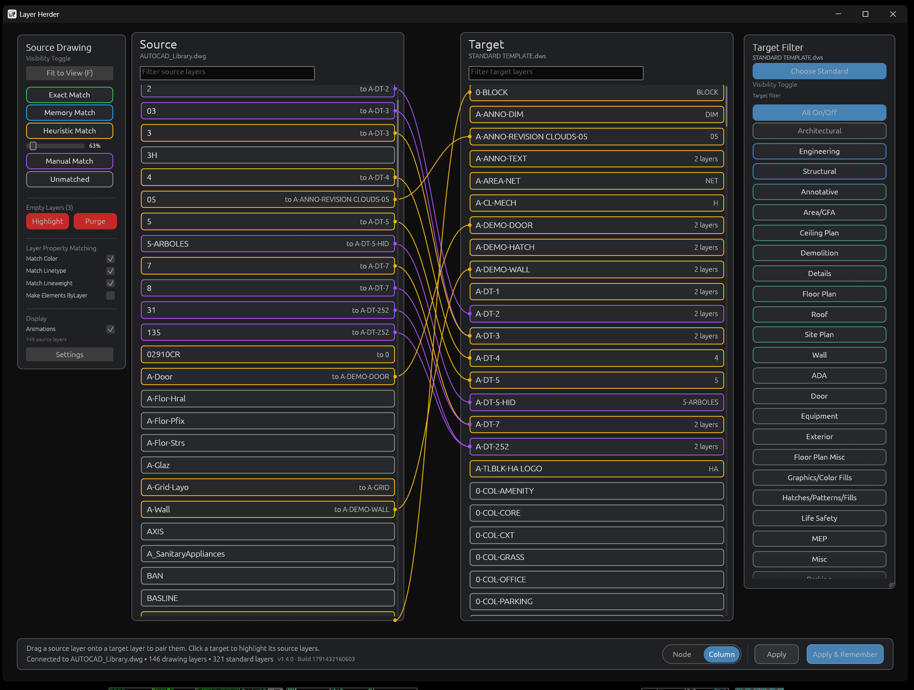
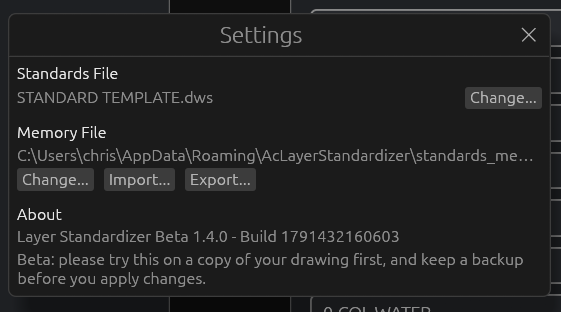

Free AutoCAD plug-in · Beta

Tidy your drawings. Herd your layers into shape.
Every drawing names its layers differently. Layer Herder maps them onto your standard and applies the changes in one pass, with undo.
Three drawings can name the same wall layer three ways: WALL, A WALLS and wall-exist.
None of them match your standard. Fixing that by hand means
renaming, merging and re-coloring layer by layer, drawing after drawing.
Illustrative names only. Layer Herder works from the standard file you point it at.
Three steps, inside AutoCAD.
HERDThe mapping editor opens with the drawing's layers on one side and your standard on the other. Layer Herder can also be opened from its ribbon tab.
Exact matches connect automatically. Layers it has mapped before connect from memory, and close names are suggested. Connect anything left by hand.
Layers are renamed or merged to match in one pass. Apply & Remember also saves your decisions for the next drawing.

Each connection line is colored by how it was made.
Everything runs inside AutoCAD on your machine.
Decisions saved with Apply & Remember are reused automatically on the next drawing. You can import and export the memory file from Settings.
If your standard uses TEXT and a drawing uses TXT, it suggests the link even if you have never mapped it.
Filter each side by match type, discipline or category, or type part of a name to narrow the list.
Ctrl+Z and Ctrl+Y undo and redo your connections while you work. Right-click any connection and choose Delete Connection.
Highlight layers with no entities and purge them, after a confirmation.
Optionally sync color, linetype and lineweight to the standard, and set elements to ByLayer.
Layers from externally referenced files are excluded, because they cannot be edited from the drawing.
Node mode draws the mapping as a graph: drag from a source layer to a standard layer, scroll to zoom and middle-drag to pan. Column mode shows both sides as scrollable lists and pairs layers by dragging one row onto another. Switch with the slider at the bottom of the window.



One installer covers every supported release, including verticals such as Civil 3D, Map 3D and Plant 3D.
| AutoCAD | Runtime |
|---|---|
| 2021 – 2024 | .NET Framework 4.8 |
| 2025 – 2026 | .NET 8 |
| 2027 | .NET 10 |
Windows only. AutoCAD 2020 and older are not supported.
It detects your AutoCAD versions and installs the matching build for each.
HERDPick your standard file in Settings the first time you run it.
The more drawings you clean up, the fewer connections you need to draw.
This is a personal project. I built it to solve my own layer-cleanup headaches, not as a commercial product. It is free, and I am happy to share it with any AutoCAD user who has the same problem.
If you hit a bug, have an idea, or want to say what did or did not work, I would like to hear it.
yiannias@gmail.com
Free code signing provided by SignPath.io, certificate by SignPath Foundation.
Team roles: Author and approver: Chris Yiannias (GitHub: yiannias). Reviewer: none (single maintainer).
Only release binaries built from the tagged source in this repository are signed. Each signing request is approved by the maintainer before the certificate is applied. Signed files are the Windows installer and the AutoCAD plug-in and mapping-editor binaries it contains.
Layer Herder is fully offline. It makes no network connections, does not check for updates, and collects no
data. Settings and translation memory are stored only on your computer, in your user profile
(%APPDATA%\AcLayerStandardizer).
The only outbound action is the Settings link to this website, which opens in your own browser when you click it.